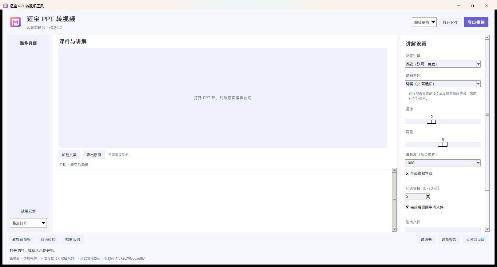

把一个 PowerPoint 文件，一键变成带 AI 中文配音和字幕的 MP4 视频。适合课件、培训、产品介绍、知识分享。
当前版本 v0.20.2 · 2026-09-28 · 免费，不需要授权码

不学新软件，跟做 PPT 一样简单。
直接读你 PPT 每页的正文和备注，自动变成配音台词；不满意的地方自己改。
内置 14 个中文音色（含男声、方言），可逐页调语速音量；也能选本地离线配音，断网可用。
一次选一堆 PPT（连文件夹都行），排队挨个出片，你可以先去干别的。
从打开到出片，就三下。
点「打开 PPT / 浏览…」选一个 .pptx。
逐页检查、修改配音台词（可给单页单独调语速、音量）。
点「导出视频」，状态栏显示「第 X/Y 页」，跑完可直接预览。
两个都是免费的绿色程序，下载下来双击就能用。
| 文件 | 大小 | 说明 |
|---|---|---|
MBppt2video-gui.exe | 111 MB | 图形界面版（推荐）：有窗口、能点，适合日常使用。 |
MBppt2video.exe | 108 MB | 命令行版：批量转换、环境预检、起网页版。 |
| 文件 | SHA256 |
|---|---|
MBppt2video-gui.exe | 747F1A210BA1B00220A0217349FC00FCB424DA228A2FB6D7A4EE4B807E21FFEC |
MBppt2video.exe | 8A87850DFDEA412AF7F3952FA3294D1FB33D169A16D9E7936E628D37814C97C4 |